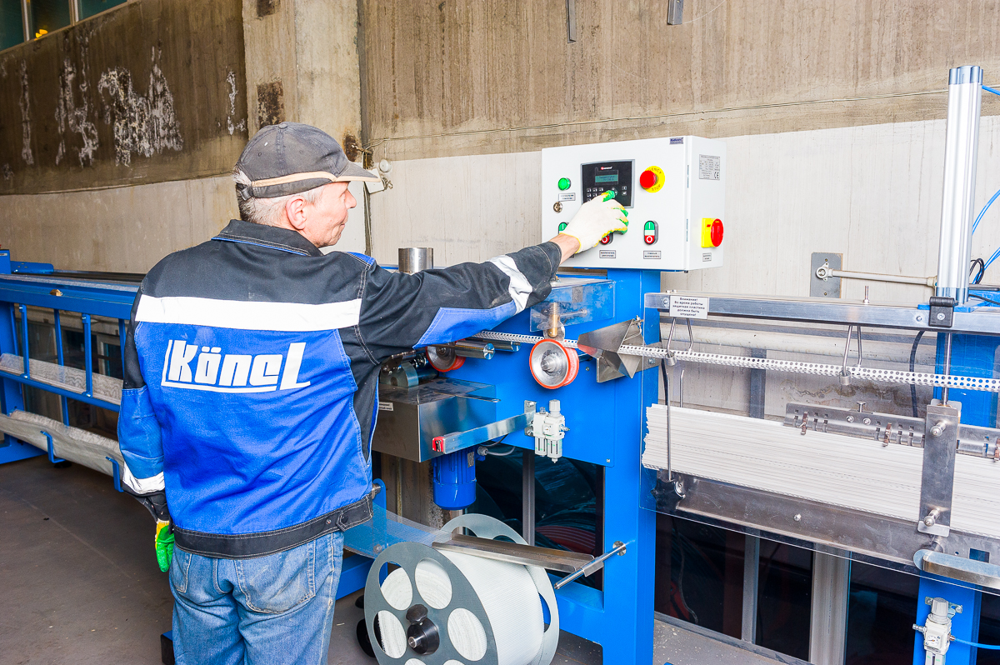
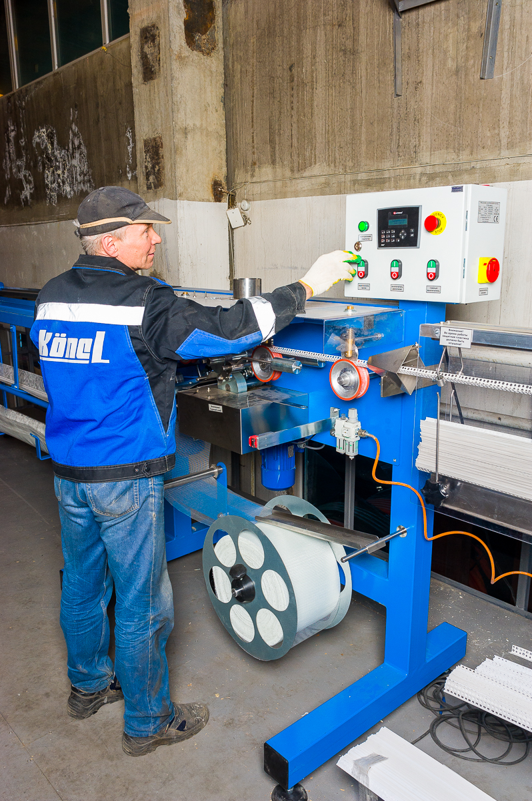
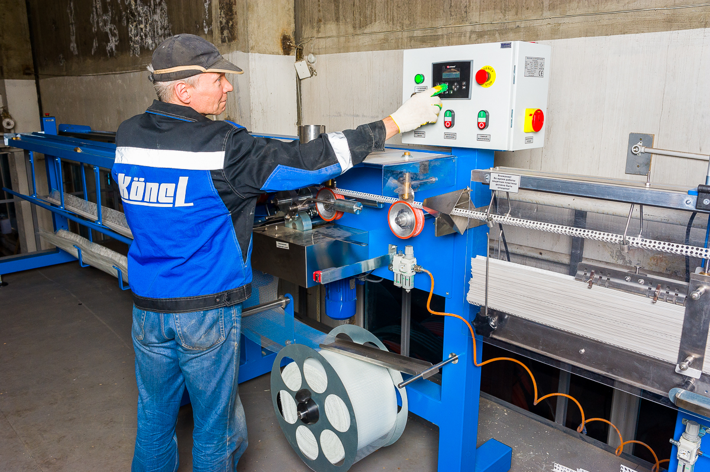

Производство фасадных комплектующихЗАВОД КЁНЕЛ
ЗАВОД КЁНЕЛ
ПРОДАЁТСЯ
Работающий бизнес из Екатеринбурга. Оборудование, команда, бренд и около 100 контрагентов.
Связаться · +7 (000) 000-00-00Единая цена54 000 000 ₽Товарный запас — отдельно, по фактическому остатку
01 / Производство
НЕ ПРОЕКТ.
РАБОТАЮЩАЯ ЛИНИЯ.
Действующее производство фасадных комплектующих в Екатеринбурге. Пять станков, отлаженная технология и команда, готовая продолжить работу после сделки.
 Линия выпуска фасадных комплектующих
Линия выпуска фасадных комплектующих02 / Финансы
ПОКАЗАТЕЛИ
2025 ГОДА

03 / Клиенты
ОКОЛО 100
КОНТРАГЕНТОВ
Продажи диверсифицированы между продавцами отделочных материалов в городах присутствия по России.
Сатурн · федеральная сетьСтройцентр Сатурн-РБрозекс · Свердловская областьДекоратор · Самара

04 / Активы
5 СТАНКОВ.
ОДНА СИСТЕМА.
- Три линии ОК-12А
- Линия ОК-12С
- Станок намотки сетки
- Запайщики, таль, компрессоры
- 82 корзины хранения
Здание и земля не входят
Производственные, складские и офисные площади арендуются.
05 / Обязательства
0
КРЕДИТНЫХ
СРЕДСТВ
По данным собственника, просроченных обязательств нет.
80% клиентов работают с отсрочкой в среднем 30 дней и платят вовремя.
06 / Причина продажи
ПЕРЕХОД К
ПАССИВНЫМ АКТИВАМ
Собственник планирует направить средства в коммерческую недвижимость и другие инвестиции, уйдя от ежедневного операционного управления.
07 / Команда
ПЕРЕДАЧА
БЕЗ РАЗРЫВА
Весь производственный коллектив готов перейти.
Отдел продаж переходит при необходимости.
Отдельного руководителя отдела продаж нет: управляла собственник.
Личная передача знаний и 6 месяцев кураторства.

Оборудование, люди и технология в одной сделке08 / Условия приобретения
ЦЕНА ПРОДАЖИ
54 МЛН ₽
Одна сделка, без пакетов. В стоимость входят бренд Кёнел, всё оборудование, клиентская база, команда, технологии производства и продаж. Земля и здание не входят. Сырьё, материалы и готовая продукция оплачиваются отдельно по фактическому остатку на дату сделки.
Сделку сопровождает агентство
ОБСУДИТЬ
ПРИОБРЕТЕНИЕ КЁНЕЛ
Компания «1% человечества» представляет интересы собственника, организует первичные переговоры и предоставляет конфиденциальные материалы квалифицированным покупателям.